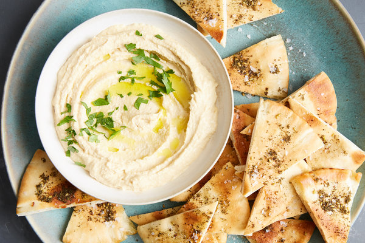
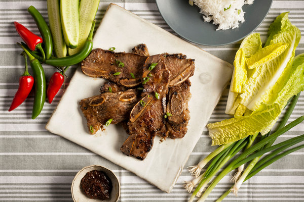
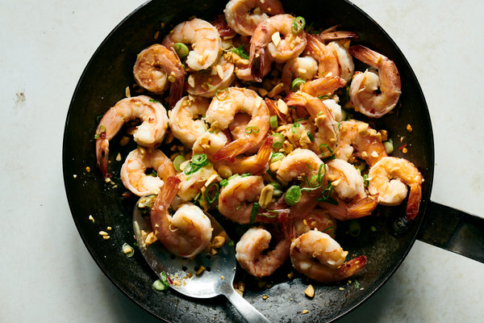

Recipe of the Month
Coconut Gochujang Glazed Chicken With Broccoli

Hummus
20 Minutes

Korean-Style Short Ribs
30 Minutes, plus marinating
Classic Scones
20 Minutes

Thai-Style Sweet and Salty Shrimp
10 Minutes